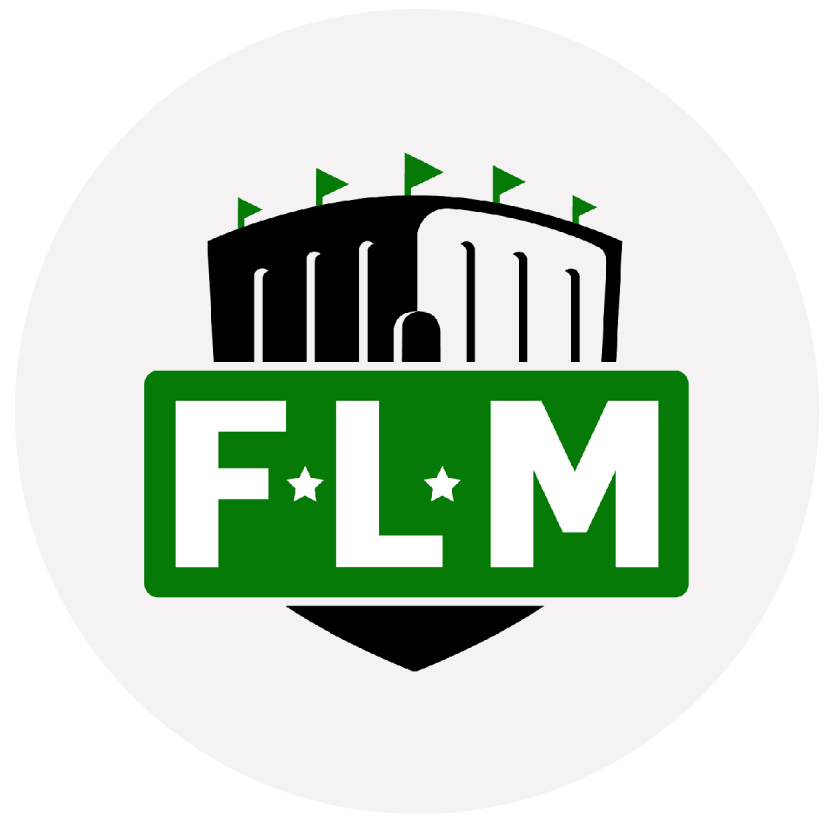
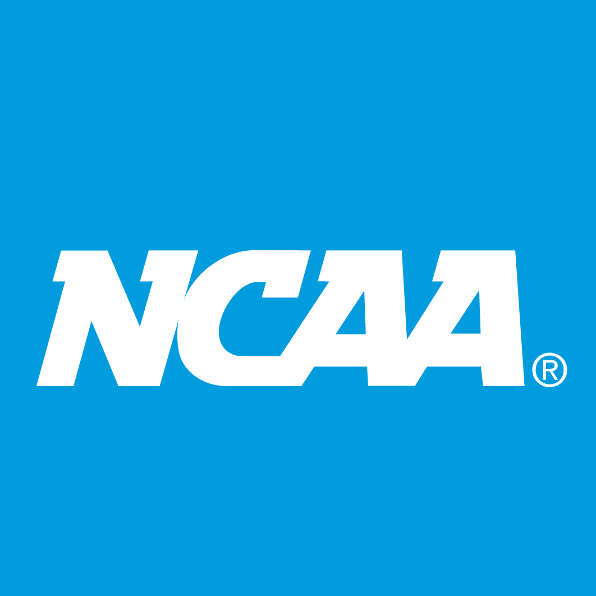
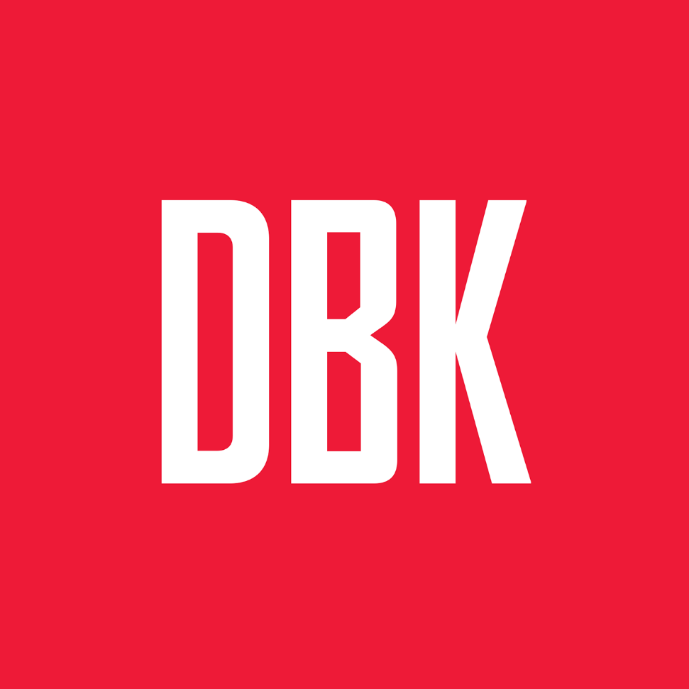
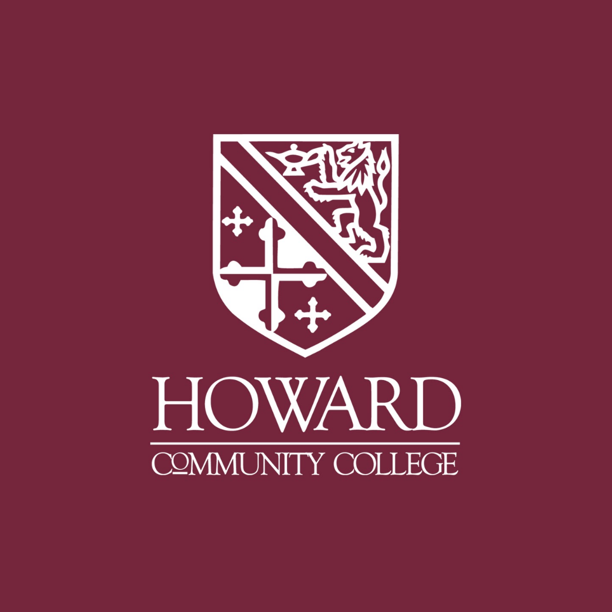
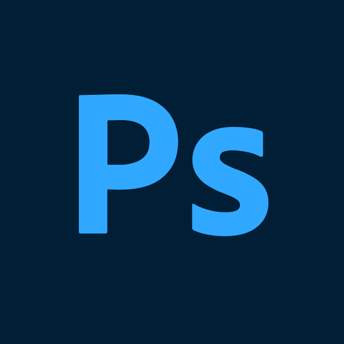

I am a rising senior at the University of Maryland pursuing a bachelor’s degree in journalism. I am seeking a career in the sports journalism field. I have experience covering Maryland volleyball for The Diamondback and basketball for Field Level Media.

Freelance Basketball Writer - Remote
Field Level Media
November 2022-present
Writes WNBA game previews and recaps for a wire service partnered with Reuters among other major organizations. Articles succinctly incorporate balanced analysis of both teams along with quotes and game action. Covered NCAA men’s basketball from November through March.

Volunteer Media Intern
Worked in various media roles during the first and second rounds of the 2023 NCAA women's basketball tournament in College Park, MD. Served as locker room steward, press conference helper and credential distributor. Facilitated smooth gameday and non-gameday operations.

Maryland Volleyball Reporter
The Diamondback
August-December 2022
Published game recaps, second-day stories and midweek previews that gave an in-depth look at the Maryland volleyball team throughout the 2022 season. Routinely provided analysis, news and updates on Twitter.

Lead Editor, The HCC Times
Howard Community College
August 2021-June 2022
Led a ten-member team of HCC student writers in publishing content that amplified community voices, held journalistic value and demonstrated writers' growth and creativity. Developed mutually respectful relationships with staff writers to improve their journalism skills and confidence as writers.
Bachelor of Arts, Journalism
University of Maryland
Expected May 2024
Associate of Arts, General Studies
Howard Community College
August 2020-May 2022
Newspaper Layout
Adobe InDesign
Copy Editing, Sportswriting
AP Style

Photo Editing
Adobe Photoshop